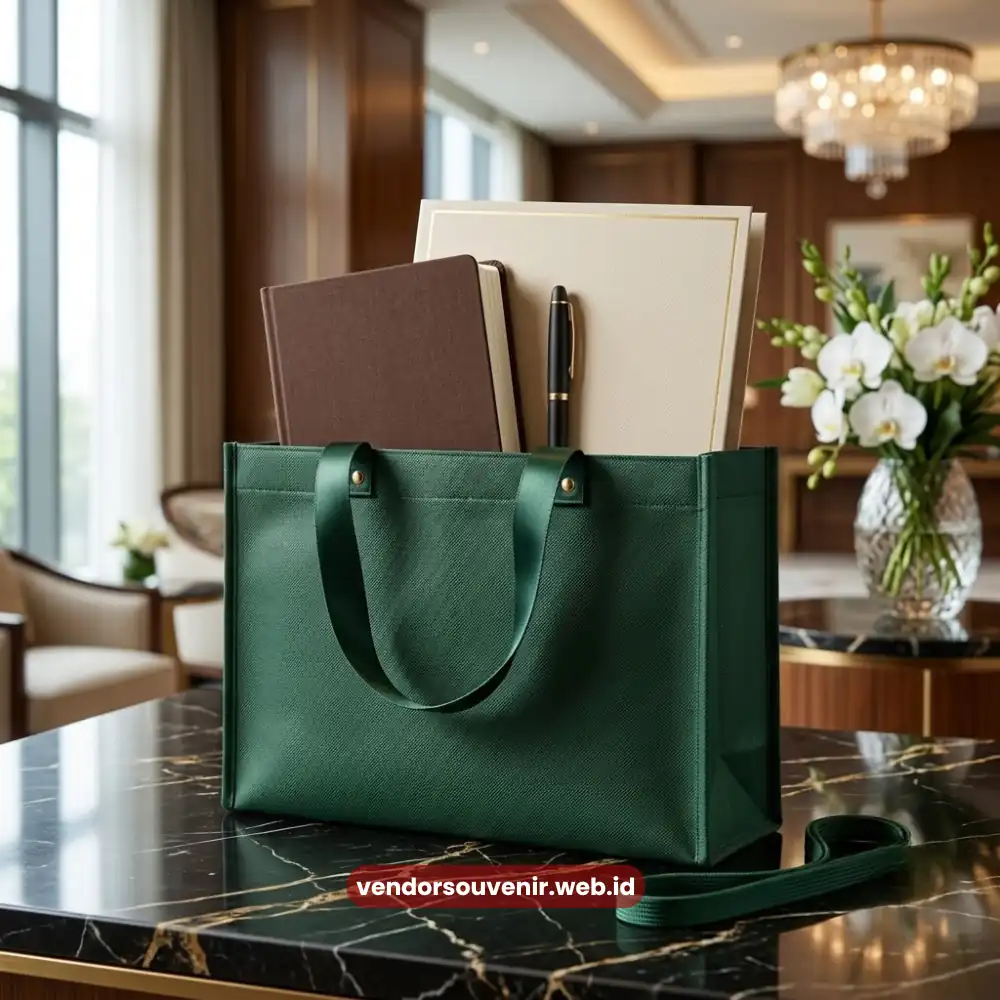

Daftar Isi
Bahan tas seminar kit custom yang paling umum digunakan adalah kanvas, spunbond, parasut, dan drill, dengan karakteristik ketahanan, tampilan, dan biaya yang berbeda-beda.
Pemilihan bahan yang tepat menentukan kesan profesional sekaligus efisiensi anggaran acara Anda.
- Kanvas cocok untuk kesan solid dan tahan lama pada acara formal.
- Spunbond menjadi pilihan ekonomis untuk peserta dalam jumlah besar.
- Parasut menawarkan ketahanan terhadap air dan bobot ringan.
- Drill memberikan kesan lebih tebal dan formal dibanding kanvas biasa.
- Pemilihan bahan sebaiknya disesuaikan dengan tema dan skala acara.
Mengapa Pemilihan Bahan Penting dalam Tas Seminar Kit Custom?
Pemilihan bahan penting karena secara langsung memengaruhi daya tahan, tampilan visual, dan kesan profesional tas seminar kit custom saat digunakan peserta. Bahan yang tepat juga memastikan cetakan logo tampil optimal sesuai teknik cetak yang digunakan.
Selain aspek visual, bahan juga menentukan kenyamanan peserta dalam membawa perlengkapan seminar selama acara berlangsung. Bahan yang terlalu tipis berisiko mudah robek, sementara bahan yang terlalu berat dapat mengurangi kenyamanan penggunaan sehari-hari.
Apa Karakteristik Bahan Kanvas untuk Tas Seminar Kit Custom?
Bahan kanvas dikenal memiliki tekstur solid, permukaan rata, dan daya tahan yang baik sehingga cocok untuk sablon maupun bordir dengan hasil detail yang tajam. Karakteristik ini membuat kanvas menjadi pilihan populer untuk acara formal berskala instansi maupun korporat besar.
Selain tampilannya yang elegan, kanvas juga relatif mudah dirawat dan tidak cepat kusut. Warna dasar kanvas yang netral memudahkan penyesuaian dengan identitas visual berbagai jenis perusahaan.
Untuk Acara Apa Bahan Kanvas Paling Cocok?
Bahan kanvas paling cocok digunakan untuk seminar formal, konferensi tingkat instansi, dan acara korporat yang mengutamakan kesan profesional serta daya tahan jangka panjang. Ketebalan kanvas turut mendukung kesan premium pada seminar kit yang dibagikan kepada peserta.

Bahan Spunbond untuk Tas Seminar Kit Custom
Apa Kelebihan Bahan Spunbond untuk Tas Seminar Kit Custom?
Bahan spunbond memiliki bobot ringan dan harga yang lebih ekonomis, menjadikannya pilihan efisien untuk seminar dengan jumlah peserta besar. Meski ringan, bahan ini tetap cukup kuat untuk menampung perlengkapan standar seperti notes, pulpen, dan materi acara.
Spunbond juga tersedia dalam berbagai warna cerah yang memudahkan penyesuaian dengan tema acara maupun identitas brand. Karakteristik ini membuat spunbond banyak dipilih untuk workshop, pelatihan massal, dan acara komunitas berskala besar.
Apakah Spunbond Cukup Kuat untuk Seminar Kit?
Spunbond cukup kuat untuk menampung perlengkapan seminar standar seperti notes, pulpen, dan flashdisk, meski daya tahannya berada di bawah kanvas untuk penggunaan jangka panjang. Bahan ini paling optimal digunakan untuk kebutuhan sekali acara dengan volume peserta besar.
Bagaimana Ketahanan Bahan Parasut pada Tas Seminar Kit Custom?
Bahan parasut memiliki permukaan licin dan ketahanan terhadap air yang membuatnya cocok untuk acara luar ruangan atau kondisi cuaca tidak menentu. Bobotnya yang ringan juga memudahkan mobilitas peserta selama membawa tas sepanjang acara.
Selain fungsi praktis, parasut menghasilkan tampilan mengilap yang memberi kesan modern pada desain tas seminar kit custom. Karakteristik ini menjadikan parasut pilihan menarik untuk acara dengan tema dinamis atau industri kreatif.
Apa Keunggulan Bahan Drill Dibanding Bahan Lainnya?
Bahan drill memiliki ketebalan dan tekstur yang lebih rapat dibanding kanvas biasa, menghasilkan kesan lebih formal dan kokoh pada tas seminar kit custom. Tekstur ini juga membuat cetakan logo terlihat lebih tegas, terutama dengan teknik bordir.
Drill sering dipilih untuk acara korporat kelas atas atau seminar dengan target audiens level manajemen, di mana kesan eksklusif dan premium menjadi pertimbangan utama.
Bagaimana Cara Menyesuaikan Bahan dengan Tema Acara?
Penyesuaian bahan dengan tema acara dapat dilakukan dengan mempertimbangkan tingkat formalitas, lokasi acara, dan jumlah peserta yang akan menerima tas seminar kit custom. Acara formal di ruangan tertutup lebih cocok menggunakan kanvas atau drill, sementara acara luar ruangan dapat mempertimbangkan bahan parasut.
Untuk acara dengan anggaran terbatas namun tetap membutuhkan tampilan rapi, kombinasi bahan spunbond dengan desain cetak yang menarik dapat menjadi solusi seimbang antara biaya dan tampilan.

Solusi Souvenir dari Vendor Terpercaya
Butuh Bantuan Merancang Tas Seminar Kit Custom?
Tim ahli kami siap membantu Anda menyusun paket seminar eksklusif yang menarik.
Pilihan barang akan disesuaikan dengan ketersediaan budget dan kebutuhan Anda.
Seluruh desain tas akan kami selaraskan dengan identitas visual perusahaan Anda.
Dapatkan penawaran harga terbaik untuk pesanan massal!
FAQ Seputar Bahan Tas Seminar Kit Custom
Bahan apa yang paling awet untuk tas seminar kit custom?
Bahan kanvas dan drill umumnya lebih awet dibanding spunbond karena teksturnya yang lebih tebal dan tahan lama.
Apa perbedaan utama kanvas dan spunbond?
Kanvas lebih tebal dan tahan lama, sementara spunbond lebih ringan dan ekonomis untuk pemesanan dalam jumlah besar.
Apakah bahan parasut cocok untuk acara indoor?
Bahan parasut tetap dapat digunakan untuk acara indoor, namun keunggulan utamanya lebih terasa pada acara luar ruangan karena ketahanannya terhadap air.
Maroon Souvenir
Partner Corporate Gift terpercaya di Indonesia. Berpengalaman melayani ratusan perusahaan sejak 2018.
Lihat Portofolio Kami